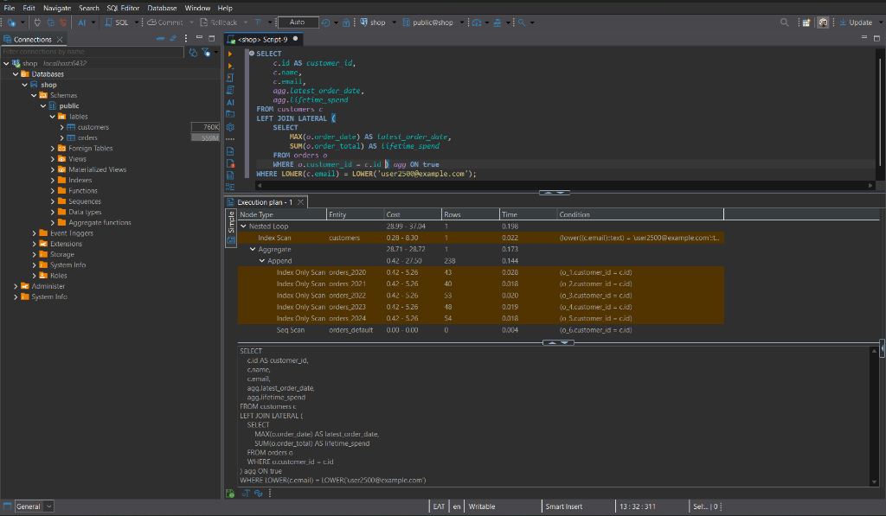

A structured, production-grade PostgreSQL performance engineering case study demonstrating a multi-stage systematic optimization of a 1.2-million-row e-commerce database. From diagnosing catastrophic correlated subqueries to covering index leaf lookups (Heap Fetches: 0), declarative range partitioning, and PgBouncer connection pooling.
Real execution tree captured in DBeaver connected through the PgBouncer transaction pool (port 6432), proving sub-millisecond execution (0.198 ms) across 1.2M rows.

Click on any node below to inspect its cost, execution duration, and optimizer behavior:
The orchestrator node performing an ultra-fast nested loop join between the single indexed customer lookup and the pre-aggregated lateral partition scans. Total query execution finishes in sub-millisecond time.
Measured on identical hardware (PostgreSQL 15 on Linux x86_64). Toggle below to compare Query Latency, Shared Buffer Page I/O, and Concurrency TPS.
| Stage | Optimization Technique | Target Operation | Before Tuning | After Tuning | Speedup Factor |
|---|---|---|---|---|---|
| Stage 1 | Diagnosis (Baseline) | Correlated Subquery Lifetime Spend | 4,200 ms | — | Baseline |
| Stage 2 | B-Tree Indexing | Order Lookup by Email (idx_orders_customer_email) |
111.6 ms | 1.65 ms | 67x faster |
| Stage 2 | Covering Index | Customer Order History (INCLUDE Index-Only) |
104.8 ms | 0.13 ms | 806x faster (Heap: 0) |
| Stage 3 | Query Rewrite | Correlated Subquery → LEFT JOIN LATERAL |
4,200 ms | 0.17 ms | >24,000x faster |
| Stage 4 | Denormalization | Customer Order Summary (mv_order_summary) |
162.1 ms | 0.04 ms | 4,050x faster |
| Stage 5 | Declarative Partitioning | 1-Year Temporal Range Aggregation (orders_2023) |
140.2 ms (30k blocks) | 110.1 ms (6.3k blocks) | 80% I/O reduction |
| Stage 6 | Connection Pooling | 50 Concurrent Clients OLTP Throughput (pgbench) |
19.68 TPS (101.6 ms) | 625.75 TPS (79.9 ms) | 32x throughput |
Step-by-step performance engineering walkthrough with exact execution commands, query transformations, and execution plans.
Analyzing unoptimised schema behavior using EXPLAIN (ANALYZE, BUFFERS) to uncover unbounded correlated subqueries, missing foreign key indexes, and CPU-intensive expression mismatches.
customers.id and orders.customer_id degrade to a Parallel Seq Scan scanning 30,000 disk blocks (~240 MB).WHERE UPPER(c.email) = 'USER2500@EXAMPLE.COM' prevented standard index lookups, forcing row-by-row function evaluation.EXPLAIN (ANALYZE, BUFFERS)
SELECT
c.id AS customer_id,
c.name,
c.email,
(SELECT MAX(o.order_date) FROM orders o WHERE o.customer_id = c.id) AS latest_order_date,
(SELECT SUM(o.order_total) FROM orders o WHERE o.customer_id = c.id) AS lifetime_spend
FROM customers c
WHERE c.email LIKE '%user49%';Seq Scan on customers c (cost=0.00..9090232.97 rows=101 width=77)
(actual time=252.453..4215.585 rows=30 loops=1)
Filter: ((email)::text ~~ '%user49%'::text)
Rows Removed by Filter: 4970
Buffers: shared hit=45583 read=5294464
SubPlan 1
-> Aggregate (cost=45000.60..45000.61 rows=1 width=8) (actual time=65.053..65.053 rows=1 loops=30)
Buffers: shared hit=22752 read=2647248
-> Seq Scan on orders o (cost=0.00..45000.00 rows=240 width=8) (actual time=0.275..64.990 rows=240 loops=30)
Filter: (customer_id = c.id)
Rows Removed by Filter: 1199760
Planning Time: 0.783 ms
Execution Time: 4216.595 msDeploying targeted index structures: standard B-Trees, Functional expression indexes, GIN for semi-structured JSONB payloads, Partial indexes for status filtering, Covering indexes for zero heap fetches, and lightweight BRIN for time series.
INCLUDE)
By defining orders (customer_id, order_date) INCLUDE (order_total, order_status), non-key payload columns are stored directly in the index leaf pages. PostgreSQL satisfies the query entirely from the B-tree leaf nodes without touching the underlying heap table pages.
CREATE INDEX IF NOT EXISTS idx_orders_customer_covering
ON orders (customer_id, order_date)
INCLUDE (order_total, order_status);
-- Functional index for instant LOWER() case-insensitive matches
CREATE INDEX IF NOT EXISTS idx_customers_email_lower
ON customers (LOWER(email));Index Only Scan Backward using idx_orders_customer_covering on orders
(cost=0.43..12.61 rows=239 width=27)
(actual time=0.054..0.082 rows=243 loops=1)
Index Cond: (customer_id = 2500)
Heap Fetches: 0
Buffers: shared hit=1 read=5
Planning Time: 1.190 ms
Execution Time: 0.134 ms
Eliminating correlated subqueries completely by rewriting into a LEFT JOIN LATERAL combined with the covering index, dropping execution time from 4,200 ms to 0.168 ms.
SELECT
c.id AS customer_id,
c.name,
c.email,
agg.latest_order_date,
agg.lifetime_spend
FROM customers c
LEFT JOIN LATERAL (
SELECT
MAX(o.order_date) AS latest_order_date,
SUM(o.order_total) AS lifetime_spend
FROM orders o
WHERE o.customer_id = c.id
) agg ON true
WHERE LOWER(c.email) = LOWER('user2500@example.com');Nested Loop Left Join (cost=14.11..22.16 rows=1 width=77)
(actual time=0.105..0.106 rows=1 loops=1)
Buffers: shared hit=5 read=4
-> Index Scan using idx_customers_email_lower on customers c (0.011 ms)
Index Cond: (lower((email)::text) = 'user2500@example.com'::text)
-> Aggregate (cost=13.83..13.84 rows=1 width=40) (0.091 ms)
-> Index Only Scan using idx_orders_customer_covering on orders o (0.053 ms)
Index Cond: (customer_id = c.id)
Heap Fetches: 0
Planning Time: 0.226 ms
Execution Time: 0.168 msPre-aggregating analytical dashboard KPIs across all 5,000 customers. Enables sub-millisecond lookups with non-blocking concurrent refresh.
CREATE MATERIALIZED VIEW mv_order_summary AS
SELECT
customer_id,
COUNT(*) AS total_orders,
SUM(order_total) AS total_spent,
ROUND(AVG(order_total), 2) AS avg_order_value,
MAX(order_date) AS last_order_date
FROM orders
GROUP BY customer_id
WITH DATA;
-- UNIQUE index enables non-blocking background refreshes
CREATE UNIQUE INDEX idx_mv_order_summary_customer_id
ON mv_order_summary (customer_id);
-- Operational refresh command:
-- REFRESH MATERIALIZED VIEW CONCURRENTLY mv_order_summary;
Restructuring monolithic 1.2M-row storage into declarative annual partitions (orders_2020 through orders_2024 plus default). Query planner prunes untouched years before execution.
In PostgreSQL declarative partitioning, composite primary keys must include the partitioning column: PRIMARY KEY (id, order_date).
CREATE TABLE orders_partitioned (
id BIGINT NOT NULL,
customer_id INT NOT NULL,
order_date TIMESTAMP NOT NULL,
order_total NUMERIC(10, 2) NOT NULL,
order_status VARCHAR(20) NOT NULL,
PRIMARY KEY (id, order_date)
) PARTITION BY RANGE (order_date);
CREATE TABLE orders_2023 PARTITION OF orders_partitioned
FOR VALUES FROM ('2023-01-01') TO ('2024-01-01');GroupAggregate (cost=27152.60..31330.65 rows=167122 width=48)
(actual time=89.975..109.461 rows=12 loops=1)
Buffers: shared hit=152236 read=6329
-> Sort (cost=27152.60..27570.41 rows=167122 width=14)
Sort Method: external merge Disk: 4120kB
-> Index Scan using orders_2023_order_date_idx on orders_2023 orders
Index Cond: ((order_date >= '2023-01-01') AND (order_date < '2024-01-01'))
Execution Time: 110.173 ms
Mitigating process-forking overhead and context switching under high client concurrency using PgBouncer in transaction mode on port 6432.
PostgreSQL allocates a dedicated Linux backend process (~5-10 MB RAM) per client. Under 100+ concurrent connections, process contention cripples performance. PgBouncer allows 1,000 client sockets to share 20 server workers.
pgbouncer:
image: edoburu/pgbouncer:latest
environment:
POOL_MODE: transaction
MAX_CLIENT_CONN: "1000"
DEFAULT_POOL_SIZE: "20"
LISTEN_PORT: "6432"
ports:
- "6432:6432"| Mode | Clients | Latency | Throughput |
|---|---|---|---|
| Direct Unoptimised | 2 | 101.62 ms | 19.68 TPS |
| Direct Optimised | 10 | 15.52 ms | 644.17 TPS |
| PgBouncer Pool | 50 | 82.05 ms | 609.38 TPS |
| PgBouncer Simple Read | 10 | 2.37 ms | 4,210.56 TPS |
Catalog of all 8 production indexes created in the clinic. Filter by index type to inspect on-disk footprint and architectural reasoning.
LOWER().
@>).
order_total > 500.00) via Bitmap Index Scans instead of inspecting 1.2M rows.
Test real scenarios from the clinic. Switch between Unoptimised and Optimised execution to compare simulated metrics and planner strategies in real-time.
SELECT c.id, c.name, c.email, ...Seq Scan on customers -> SubPlan 1 (Seq Scan orders 1.2M)How clients, PgBouncer, the PostgreSQL 15 core engine, partitioned storage, and materialized views interact. Click any node to view configuration parameters.
Configured with shared_preload_libraries=pg_stat_statements and pg_stat_statements.track=all. Manages shared buffer cache, WAL logging, cost-based query optimizer, and declarative partition pruning.
pg_stat_statementsIn high-volume production, slow queries must be caught proactively without running continuous manual EXPLAIN calls.
SELECT
calls,
ROUND(total_exec_time::numeric, 2) AS total_time_ms,
ROUND(mean_exec_time::numeric, 2) AS mean_time_ms,
ROUND((100.0 * total_exec_time / SUM(total_exec_time) OVER())::numeric, 2) AS pct_load,
rows,
SUBSTRING(query, 1, 80) AS query_preview
FROM pg_stat_statements
ORDER BY total_exec_time DESC
LIMIT 10;SELECT
query,
calls,
shared_blks_hit,
shared_blks_read,
ROUND((100.0 * shared_blks_hit / NULLIF(shared_blks_hit + shared_blks_read, 0))::numeric, 2) AS cache_hit_ratio
FROM pg_stat_statements
WHERE calls > 5
ORDER BY shared_blks_read DESC
LIMIT 5;The entire PostgreSQL 15 and PgBouncer environment starts with a single Docker Compose command.
This project is part of a curated series demonstrating production database architectures and performance engineering.
Row-Level Security (RLS), tenant schema isolation, and multi-tenant connection pooling.
TimescaleDB hypertables, columnar chunk compression, and real-time continuous aggregates.
Closure tables, recursive CTEs, and PostgreSQL ltree for large org charts.
Isolation levels, optimistic concurrency control, and pessimistic reservation semantics.
PostGIS spatial indexing, KNN nearest-neighbor matching, and pgRouting shortest paths.
Index internals, correlated subquery elimination, declarative partitioning, and PgBouncer.